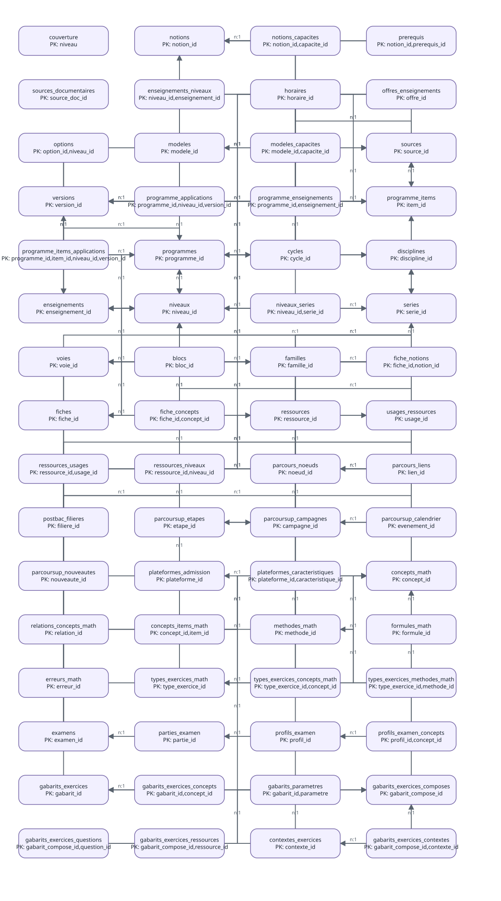
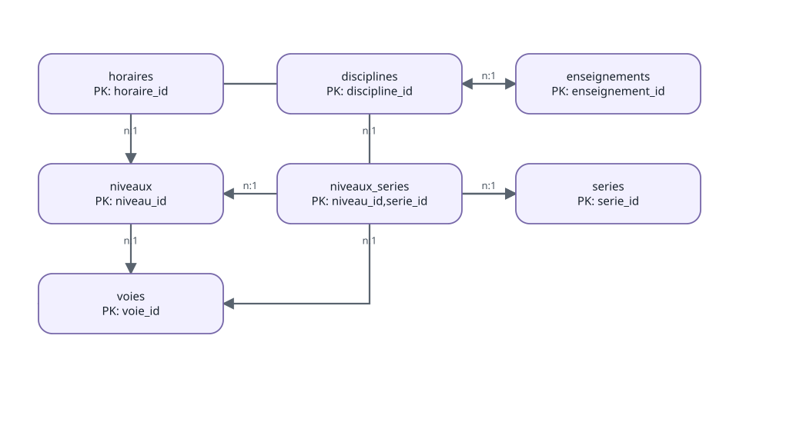

Rentrer en profondeur dans eduschool
rentrer-en-profondeur-dans-eduschool.Rmdeduschool est volontairement un mini système
d’information relationnel. Il ne cherche pas à remplacer les
textes officiels ni à maintenir une base de données complexe. Son
objectif est plus simple : conserver des données scolaires lisibles dans
des fichiers CSV, déclarer clairement leurs relations, contrôler leur
cohérence et fournir des fonctions R stables pour les interroger.
Cette vignette décrit le fonctionnement interne du package. Les
inventaires, contrôles et diagrammes ci-dessous sont produits à partir
des données et des métadonnées réellement installées avec
eduschool.
1. Le principe : des CSV simples, un modèle explicite
Les données sont rangées par domaine sous inst/ :
référentiels, enseignements, programmes, documentation, exercices et
révisions. Elles restent donc lisibles avec les outils les plus simples
possibles :
read.csv2(
eduschool_path("referentiels", "niveaux.csv"),
stringsAsFactors = FALSE
)Les fonctions publiques (niveaux(),
horaires_niveau(), programmes(), etc.)
constituent toutefois l’interface recommandée. Elles évitent de
dupliquer les règles de jointure et de filtrage dans les analyses et
dans les vignettes.
2. Un contrat de données lui-même stocké en CSV
Trois fichiers décrivent le mini-SI :
-
inst/metadata/tables.csv: catalogue des tables, fichiers et clés primaires ; -
inst/metadata/colonnes.csv: colonnes attendues, type de stockage, type sémantique et rôle PK/FK ; -
inst/metadata/relations.csv: clés étrangères et cardinalités.
Ils sont directement consultables :
head(tables_si())
#> table fichier domaine
#> 1 couverture documentation/couverture.csv documentation
#> 2 notions documentation/notions.csv documentation
#> 3 notions_capacites documentation/notions_capacites.csv documentation
#> 4 prerequis documentation/prerequis.csv documentation
#> 5 sources_documentaires documentation/sources_documentaires.csv documentation
#> 6 enseignements_niveaux enseignements/enseignements_niveaux.csv enseignements
#> description cle_primaire
#> 1 Couverture documentaire par niveau niveau
#> 2 Notions pedagogiques documentees notion_id
#> 3 Relations entre notions et capacites notion_id,capacite_id
#> 4 Prerequis entre notions notion_id,prerequis_id
#> 5 Sources documentaires pedagogiques source_doc_id
#> 6 Enseignements disponibles par niveau niveau_id,enseignement_id
#> colonnes
#> 1 niveau,themes,capacites,capacites_documentees,couverture_capacites
#> 2 notion_id,discipline_id,libelle,description,document
#> 3 notion_id,capacite_id,role
#> 4 notion_id,prerequis_id,importance,commentaire
#> 5 source_doc_id,libelle,url,type_source
#> 6 niveau_id,enseignement_id,statut
head(colonnes_si())
#> table colonne type_stockage type_semantique role nullable
#> 1 couverture niveau character text PK non
#> 2 couverture themes character integer oui
#> 3 couverture capacites character integer oui
#> 4 couverture capacites_documentees character integer oui
#> 5 couverture couverture_capacites character decimal oui
#> 6 notions notion_id character identifier PK non
#> description
#> 1
#> 2
#> 3
#> 4
#> 5
#> 6 Identifiant stable d’une notion pédagogique
head(relations_si())
#> relation_id table_source colonne_source table_cible colonne_cible nullable
#> 1 REL001 niveaux cycle_id cycles cycle_id oui
#> 2 REL002 niveaux voie_id voies voie_id oui
#> 3 REL003 voies voie_parent_id voies voie_id oui
#> 4 REL004 series voie_id voies voie_id non
#> 5 REL005 niveaux_series niveau_id niveaux niveau_id non
#> 6 REL006 niveaux_series serie_id series serie_id non
#> cardinalite description
#> 1 n:1 Cycle du niveau
#> 2 n:1 Voie du niveau
#> 3 n:1 Hierarchie des voies
#> 4 n:1 Voie de la serie
#> 5 n:1 Niveau de la serie
#> 6 n:1 Serie disponibleCette approche garde une propriété importante du projet : les métadonnées sont aussi simples que les données. Aucun format ou moteur supplémentaire n’est nécessaire pour comprendre le modèle.
3. Inventaire réel des tables
L’inventaire suivant n’est pas écrit à la main.
inventaire_si() lit le catalogue puis chaque CSV pour
calculer sa taille réelle.
inv = inventaire_si()
knitr::kable(
inv[, c("table", "domaine", "cle_primaire", "n_lignes", "n_colonnes")],
row.names = FALSE
)| table | domaine | cle_primaire | n_lignes | n_colonnes |
|---|---|---|---|---|
| couverture | documentation | niveau | 11 | 5 |
| notions | documentation | notion_id | 253 | 5 |
| notions_capacites | documentation | notion_id,capacite_id | 487 | 3 |
| prerequis | documentation | notion_id,prerequis_id | 33 | 4 |
| sources_documentaires | documentation | source_doc_id | 2 | 4 |
| enseignements_niveaux | enseignements | niveau_id,enseignement_id | 41 | 3 |
| horaires | enseignements | horaire_id | 247 | 10 |
| offres_enseignements | enseignements | offre_id | 175 | 6 |
| options | enseignements | option_id,niveau_id | 13 | 7 |
| modeles | exercices | modele_id | 5 | 7 |
| modeles_capacites | exercices | modele_id,capacite_id | 9 | 2 |
| sources | metadata | source_id | 34 | 8 |
| versions | metadata | version_id | 4 | 4 |
| programme_applications | programmes | programme_id,niveau_id,version_id | 135 | 5 |
| programme_enseignements | programmes | programme_id,enseignement_id | 44 | 2 |
| programme_items | programmes | item_id | 995 | 9 |
| programme_items_applications | programmes | programme_id,item_id,niveau_id,version_id | 1101 | 4 |
| programmes | programmes | programme_id | 63 | 6 |
| cycles | referentiels | cycle_id | 3 | 3 |
| disciplines | referentiels | discipline_id | 22 | 2 |
| enseignements | referentiels | enseignement_id | 56 | 4 |
| niveaux | referentiels | niveau_id | 9 | 5 |
| niveaux_series | referentiels | niveau_id,serie_id | 19 | 2 |
| series | referentiels | serie_id | 9 | 3 |
| voies | referentiels | voie_id | 4 | 3 |
| blocs | revision | bloc_id | 52 | 8 |
| familles | revision | famille_id | 7 | 3 |
| fiche_notions | revision | fiche_id,notion_id | 23 | 3 |
| fiches | revision | fiche_id | 9 | 7 |
| ressources | ressources | ressource_id | 8 | 10 |
| usages_ressources | ressources | usage_id | 7 | 4 |
| ressources_usages | ressources | ressource_id,usage_id | 24 | 2 |
| ressources_niveaux | ressources | ressource_id,niveau_id | 60 | 2 |
| parcours_noeuds | orientation | noeud_id | 10 | 8 |
| parcours_liens | orientation | lien_id | 11 | 5 |
| postbac_filieres | orientation | filiere_id | 9 | 9 |
| parcoursup_etapes | orientation | etape_id | 6 | 5 |
| parcoursup_campagnes | orientation | campagne_id | 1 | 5 |
| parcoursup_calendrier | orientation | evenement_id | 8 | 8 |
| parcoursup_nouveautes | orientation | nouveaute_id | 2 | 6 |
| plateformes_admission | orientation | plateforme_id | 2 | 7 |
| plateformes_caracteristiques | orientation | plateforme_id,caracteristique_id | 6 | 6 |
Une nouvelle table ajoutée au contrat apparaîtra donc automatiquement dans cette vignette lors de sa reconstruction.
4. Relations entre les tables
Le diagramme suivant est généré depuis tables.csv et
relations.csv.

Pour comprendre le modèle, il est souvent plus utile de regarder un sous-ensemble. Par exemple, le rattachement des horaires aux niveaux et aux séries :

5. Exemple important : seconde générale et STHR
Une ligne horaire n’est pas définie uniquement par
niveau_id. Elle possède aussi une portée.
Trois cas sont distingués :
-
COMMUN: horaire commun à tout le niveau ; -
COMPLEMENT_SERIE: enseignement qui complète une grille commune, par exemple une spécialité de la voie générale ; -
GRILLE_SERIE: horaire appartenant à la grille propre d’une série.
Cette distinction évite une erreur classique. Une recherche brute sur
niveau_id == "2GT" trouve à la fois les mathématiques de la
seconde générale et technologique commune (4 h) et celles de la seconde
STHR (3 h). Ces deux lignes sont relationnellement rattachées à
2GT, mais elles n’ont pas la même portée.
L’API métier porte donc cette règle :
horaires_niveau("2GT")[
horaires_niveau("2GT")$discipline_id == "MAT",
c("enseignement_id", "volume", "portee")
]
#> enseignement_id volume portee
#> 5 MATH_2GT 4 COMMUN
horaires_niveau("2GT", serie_id = "STHR")[
horaires_niveau("2GT", serie_id = "STHR")$discipline_id == "MAT",
c("enseignement_id", "volume", "serie_id", "portee")
]
#> enseignement_id volume serie_id portee
#> 1 MATH_2GT 3 STHR GRILLE_SERIELe point essentiel est qu’une relation valide sur le plan technique ne suffit pas toujours : la sémantique de la relation doit également être modélisée.
6. Pourquoi les CSV sont lus comme du texte
Les CSV constituent la couche source. Pour rendre leur lecture
déterministe, eduschool les charge comme des colonnes de
type character. Les conversions numériques ou temporelles
sont ensuite faites explicitement lorsqu’une fonction métier en a
besoin.
Par exemple, volume conserve la représentation présente
dans la source :
h = horaires_niveau("2GT")
str(h$volume)
#> chr [1:10] "4" "3" "5.5" "1.5" "4" "3" "1.5" "2" "18" "1.5"Une fonction qui doit calculer avec cet horaire effectue explicitement la conversion. Cela évite qu’un changement de contenu dans un CSV modifie silencieusement le type d’une colonne à l’import.
Le fichier colonnes.csv distingue pour cette raison
type_stockage et type_semantique : une valeur
peut être stockée comme texte tout en représentant sémantiquement un
nombre décimal, une date, une URL ou un identifiant.
7. Contrôles d’intégrité : structure et sémantique
Une clé étrangère valide prouve qu’un identifiant existe. Elle ne
prouve pas que son emploi est correct dans le contexte métier.
eduschool distingue donc deux étages de contrôle.
7.1 Intégrité structurelle
Les contrôles structurels sont directement dérivés des métadonnées :
- présence des colonnes déclarées ;
- unicité et non-vacuité des clés primaires ;
- absence de clés étrangères orphelines ;
- respect des domaines structurants déclarés.
resume_controles_si(niveau = "structure")
#> type controles_total controles_ok
#> 1 cle_etrangere 70 70
#> 2 cle_primaire 42 42
#> 3 colonnes 42 42
#> 4 domaine 1 17.2 Cohérence métier
Les contrôles sémantiques vérifient les règles qui ne peuvent pas être exprimées par une simple relation PK/FK :
- une série doit appartenir à la voie de son niveau, directement ou par la hiérarchie des voies ;
-
COMMUNne doit pas porter de série, tandis queGRILLE_SERIEetCOMPLEMENT_SERIEdoivent en porter une ; - toute série utilisée dans
horairesdoit être rattachée au niveau concerné ; - une même ligne métier d’une grille horaire ne doit pas être déclarée deux fois ;
- l’application d’un programme doit respecter son niveau ou son cycle lorsqu’ils sont explicitement définis ;
- la période d’application d’un programme doit chevaucher la version scolaire à laquelle elle est rattachée ;
- un programme ne peut pas commencer à s’appliquer avant sa publication.
controles_semantiques = controle_integrite_si(niveau = "semantique")
knitr::kable(controles_semantiques, row.names = FALSE)| type | table | objet | ok | n_anomalies | detail |
|---|---|---|---|---|---|
| semantique_niveau_serie | niveaux_series | voie_compatible | TRUE | 0 | / |
| semantique_horaires | horaires | portee_serie | TRUE | 0 | |
| semantique_horaires | horaires | serie_rattachee_au_niveau | TRUE | 0 | |
| semantique_horaires | horaires | unicite_grille | TRUE | 0 | |
| semantique_programmes | programme_applications | niveau_cycle | TRUE | 0 | / |
| semantique_versions | programme_applications | chevauchement_version | TRUE | 0 | // |
| semantique_programmes | programme_applications | publication_avant_application | TRUE | 0 | / |
Le contrôle complet réunit les deux niveaux :
resume_controles_si()
#> type controles_total controles_ok
#> 1 cle_etrangere 70 70
#> 2 cle_primaire 42 42
#> 3 colonnes 42 42
#> 4 domaine 1 1
#> 5 semantique_horaires 3 3
#> 6 semantique_niveau_serie 1 1
#> 7 semantique_programmes 2 2
#> 8 semantique_versions 1 1Pour un contrôle bloquant, utile dans les tests ou avant une publication :
controle_integrite_si(niveau = "complet", strict = TRUE)Cette séparation est importante. L’anomalie historique 2GT/STHR
aurait pu passer un contrôle purement relationnel : les identifiants
existaient tous. C’est la combinaison
niveau_id + serie_id + portee qui devait aussi être
cohérente.
8. De la relation brute à l’API métier
Le rôle des fonctions publiques est de concentrer les règles métier.
Une vignette ou un rapport ne devrait pas reconstruire lui-même une
jointure complexe entre horaires, niveaux,
series et enseignements.
Le flux recommandé est donc :
CSV bruts
|
v
contrat de donnees (tables / colonnes / relations)
|
v
controles d'integrite
|
v
fonctions metier R
|
v
vignettes / rapports / fiches pedagogiquesCette séparation permet de corriger une règle une seule fois dans le package et d’en faire bénéficier tous les usages.
9. Ajouter une nouvelle table sans fragiliser le SI
Pour étendre eduschool, la démarche recommandée est
volontairement courte :
- ajouter le CSV dans le domaine adapté sous
inst/; - déclarer la table et sa clé primaire dans
tables.csv; - déclarer ses colonnes dans
colonnes.csv; - déclarer ses clés étrangères dans
relations.csv; - lancer
controle_integrite_si(strict = TRUE); - ajouter une fonction métier lorsque l’accès direct au CSV ne suffit plus ;
- ajouter des tests sémantiques pour les règles qui ne peuvent pas être exprimées par une simple clé étrangère.
Le but n’est pas de multiplier les abstractions, mais de rendre explicites et testables les règles qui existaient auparavant implicitement dans le code.
10. Ce que DuckDB apporte, et ce qu’il ne remplace pas
DuckDB reste très utile pour explorer librement le SI et effectuer des jointures SQL. Il n’est cependant pas la source de vérité du modèle. Les CSV et leurs métadonnées restent la représentation portable du projet ; DuckDB est un moteur d’interrogation construit au-dessus d’eux.
Cette organisation permet à eduschool de rester un
projet léger tout en bénéficiant des garanties essentielles d’un système
relationnel : identifiants stables, relations déclarées, contrôles
reproductibles et API métier cohérente.